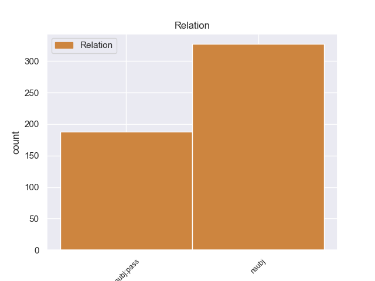
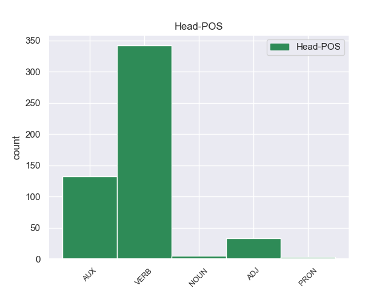
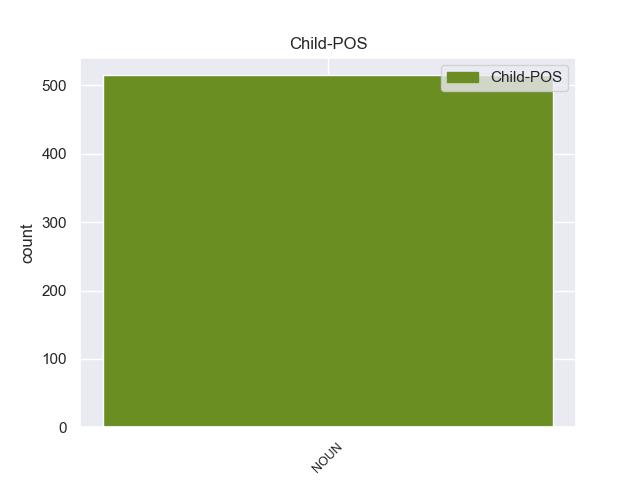

Distribution of features within this leaf



Agreement Rules sorted by frequency.
- When the dependent token is the nominal subject(nsubj) of the head token, and the dependent token is NOUN.
1 Durante _ _ _ _ 0 _ _ _
2 il _ _ _ _ 0 _ _ _
3 terremoto _ _ _ _ 0 _ _ _
4 in _ _ _ _ 0 _ _ _
5 Iran _ _ _ _ 0 _ _ _
6 , _ _ _ _ 0 _ _ _
7 sono _ _ _ _ 0 _ _ _
8 morte morire VERB -- Gender=Fem|Number=Plur|Tense=Past|VerbForm=Part 0 _ _ _
9 moltissime _ _ _ _ 0 _ _ _
10 persone persona NOUN -- Gender=Fem|Number=Plur 8 nsubj _ _
11 e _ _ _ _ 0 _ _ _
12 il _ _ _ _ 0 _ _ _
13 centro _ _ _ _ 0 _ _ _
14 storico _ _ _ _ 0 _ _ _
15 di _ _ _ _ 0 _ _ _
16 la _ _ _ _ 0 _ _ _
17 città _ _ _ _ 0 _ _ _
18 di _ _ _ _ 0 _ _ _
19 Bam _ _ _ _ 0 _ _ _
20 è _ _ _ _ 0 _ _ _
21 stato _ _ _ _ 0 _ _ _
22 completamente _ _ _ _ 0 _ _ _
23 distrutto _ _ _ _ 0 _ _ _
24 . _ _ _ _ 0 _ _ _
1 In _ _ _ _ 0 _ _ _
2 l’ _ _ _ _ 0 _ _ _
3 Assemblea _ _ _ _ 0 _ _ _
4 Costituente _ _ _ _ 0 _ _ _
5 sono _ _ _ _ 0 _ _ _
6 state essere AUX -- Gender=Fem|Number=Plur|Tense=Past|VerbForm=Part 0 _ _ _
7 elette _ _ _ _ 0 _ _ _
8 556 _ _ _ _ 0 _ _ _
9 persone persona NOUN -- Gender=Fem|Number=Plur 6 nsubj:pass _ _
10 : _ _ _ _ 0 _ _ _
11 21 _ _ _ _ 0 _ _ _
12 di _ _ _ _ 0 _ _ _
13 queste _ _ _ _ 0 _ _ _
14 persone _ _ _ _ 0 _ _ _
15 erano _ _ _ _ 0 _ _ _
16 donne _ _ _ _ 0 _ _ _
17 . _ _ _ _ 0 _ _ _
Disagree Examples:
1 una _ _ _ _ 0 _ _ _
2 sala sala NOUN -- Gender=Fem|Number=Sing 4 nsubj:pass _ _
3 ha _ _ _ _ 0 _ _ _
4 dovuto dovere AUX -- Gender=Masc|Number=Sing|Tense=Past|VerbForm=Part 0 _ _ _
5 essere _ _ _ _ 0 _ _ _
6 sgomberata _ _ _ _ 0 _ _ _
7 per _ _ _ _ 0 _ _ _
8 una _ _ _ _ 0 _ _ _
9 fuga _ _ _ _ 0 _ _ _
10 di _ _ _ _ 0 _ _ _
11 gas _ _ _ _ 0 _ _ _
12 tossico _ _ _ _ 0 _ _ _
13 da _ _ _ _ 0 _ _ _
14 una _ _ _ _ 0 _ _ _
15 scultura _ _ _ _ 0 _ _ _
16 moderna _ _ _ _ 0 _ _ _
17 in _ _ _ _ 0 _ _ _
18 vetro _ _ _ _ 0 _ _ _
19 che _ _ _ _ 0 _ _ _
20 simboleggia _ _ _ _ 0 _ _ _
21 " _ _ _ _ 0 _ _ _
22 i _ _ _ _ 0 _ _ _
23 pericoli _ _ _ _ 0 _ _ _
24 di _ _ _ _ 0 _ _ _
25 la _ _ _ _ 0 _ _ _
26 vita _ _ _ _ 0 _ _ _
27 " _ _ _ _ 0 _ _ _
28 . _ _ _ _ 0 _ _ _
1 Assieme _ _ _ _ 0 _ _ _
2 a _ _ _ _ 0 _ _ _
3 i _ _ _ _ 0 _ _ _
4 sei _ _ _ _ 0 _ _ _
5 assassinati _ _ _ _ 0 _ _ _
6 avevano _ _ _ _ 0 _ _ _
7 preso prendere VERB -- Gender=Masc|Number=Sing|Tense=Past|VerbForm=Part 0 _ _ _
8 posto _ _ _ _ 0 _ _ _
9 su _ _ _ _ 0 _ _ _
10 le _ _ _ _ 0 _ _ _
11 jeep _ _ _ _ 0 _ _ _
12 anche _ _ _ _ 0 _ _ _
13 la _ _ _ _ 0 _ _ _
14 moglie moglie NOUN -- Gender=Fem|Number=Sing 7 nsubj _ _
15 zairota _ _ _ _ 0 _ _ _
16 di _ _ _ _ 0 _ _ _
17 Castiglioni _ _ _ _ 0 _ _ _
18 , _ _ _ _ 0 _ _ _
19 Bagora _ _ _ _ 0 _ _ _
20 Kikuru _ _ _ _ 0 _ _ _
21 ( _ _ _ _ 0 _ _ _
22 detta _ _ _ _ 0 _ _ _
23 Noella _ _ _ _ 0 _ _ _
24 ) _ _ _ _ 0 _ _ _
25 , _ _ _ _ 0 _ _ _
26 rimasta _ _ _ _ 0 _ _ _
27 ferita _ _ _ _ 0 _ _ _
28 non _ _ _ _ 0 _ _ _
29 gravemente _ _ _ _ 0 _ _ _
30 e _ _ _ _ 0 _ _ _
31 ora _ _ _ _ 0 _ _ _
32 ricoverata _ _ _ _ 0 _ _ _
33 a _ _ _ _ 0 _ _ _
34 l' _ _ _ _ 0 _ _ _
35 ospedale _ _ _ _ 0 _ _ _
36 di _ _ _ _ 0 _ _ _
37 Rutshuru _ _ _ _ 0 _ _ _
38 , _ _ _ _ 0 _ _ _
39 un _ _ _ _ 0 _ _ _
40 quinto _ _ _ _ 0 _ _ _
41 volontario _ _ _ _ 0 _ _ _
42 , _ _ _ _ 0 _ _ _
43 Flavio _ _ _ _ 0 _ _ _
44 Riva _ _ _ _ 0 _ _ _
45 , _ _ _ _ 0 _ _ _
46 miracolosamente _ _ _ _ 0 _ _ _
47 illeso _ _ _ _ 0 _ _ _
48 , _ _ _ _ 0 _ _ _
49 ma _ _ _ _ 0 _ _ _
50 ora _ _ _ _ 0 _ _ _
51 in _ _ _ _ 0 _ _ _
52 grave _ _ _ _ 0 _ _ _
53 stato _ _ _ _ 0 _ _ _
54 di _ _ _ _ 0 _ _ _
55 choc _ _ _ _ 0 _ _ _
56 , _ _ _ _ 0 _ _ _
57 e _ _ _ _ 0 _ _ _
58 un _ _ _ _ 0 _ _ _
59 numero _ _ _ _ 0 _ _ _
60 imprecisato _ _ _ _ 0 _ _ _
61 di _ _ _ _ 0 _ _ _
62 loro _ _ _ _ 0 _ _ _
63 colleghi _ _ _ _ 0 _ _ _
64 e _ _ _ _ 0 _ _ _
65 amici _ _ _ _ 0 _ _ _
66 . _ _ _ _ 0 _ _ _
1 Lo _ _ _ _ 0 _ _ _
2 scontro _ _ _ _ 0 _ _ _
3 più _ _ _ _ 0 _ _ _
4 grave _ _ _ _ 0 _ _ _
5 è _ _ _ _ 0 _ _ _
6 avvenuto _ _ _ _ 0 _ _ _
7 a _ _ _ _ 0 _ _ _
8 Polignana _ _ _ _ 0 _ _ _
9 a _ _ _ _ 0 _ _ _
10 Mare _ _ _ _ 0 _ _ _
11 ( _ _ _ _ 0 _ _ _
12 Bari _ _ _ _ 0 _ _ _
13 ) _ _ _ _ 0 _ _ _
14 dove _ _ _ _ 0 _ _ _
15 hanno _ _ _ _ 0 _ _ _
16 perso perdere VERB -- Gender=Masc|Number=Sing|Tense=Past|VerbForm=Part 0 _ _ _
17 la _ _ _ _ 0 _ _ _
18 vita _ _ _ _ 0 _ _ _
19 tre _ _ _ _ 0 _ _ _
20 persone persona NOUN -- Gender=Fem|Number=Plur 16 nsubj _ _
21 fra _ _ _ _ 0 _ _ _
22 cui _ _ _ _ 0 _ _ _
23 un _ _ _ _ 0 _ _ _
24 padre _ _ _ _ 0 _ _ _
25 e _ _ _ _ 0 _ _ _
26 la _ _ _ _ 0 _ _ _
27 figlia _ _ _ _ 0 _ _ _
28 di _ _ _ _ 0 _ _ _
29 10 _ _ _ _ 0 _ _ _
30 anni _ _ _ _ 0 _ _ _
31 mentre _ _ _ _ 0 _ _ _
32 un' _ _ _ _ 0 _ _ _
33 altra _ _ _ _ 0 _ _ _
34 figlia _ _ _ _ 0 _ _ _
35 di _ _ _ _ 0 _ _ _
36 3 _ _ _ _ 0 _ _ _
37 è _ _ _ _ 0 _ _ _
38 in _ _ _ _ 0 _ _ _
39 fin _ _ _ _ 0 _ _ _
40 di _ _ _ _ 0 _ _ _
41 vita _ _ _ _ 0 _ _ _
42 . _ _ _ _ 0 _ _ _
1 " _ _ _ _ 0 _ _ _
2 Un _ _ _ _ 0 _ _ _
3 anno _ _ _ _ 0 _ _ _
4 fa _ _ _ _ 0 _ _ _
5 abbiamo _ _ _ _ 0 _ _ _
6 giocato giocare VERB -- Gender=Masc|Number=Sing|Tense=Past|VerbForm=Part 0 _ _ _
7 la _ _ _ _ 0 _ _ _
8 prima _ _ _ _ 0 _ _ _
9 partita partita NOUN -- Gender=Fem|Number=Sing 6 nsubj _ _
10 " _ _ _ _ 0 _ _ _
11 televisiva _ _ _ _ 0 _ _ _
12 " _ _ _ _ 0 _ _ _
13 dopo _ _ _ _ 0 _ _ _
14 25 _ _ _ _ 0 _ _ _
15 giorni _ _ _ _ 0 _ _ _
16 di _ _ _ _ 0 _ _ _
17 preparazione _ _ _ _ 0 _ _ _
18 " _ _ _ _ 0 _ _ _
19 . _ _ _ _ 0 _ _ _
1 I _ _ _ _ 0 _ _ _
2 resti _ _ _ _ 0 _ _ _
3 di _ _ _ _ 0 _ _ _
4 un _ _ _ _ 0 _ _ _
5 rito _ _ _ _ 0 _ _ _
6 satanico _ _ _ _ 0 _ _ _
7 vicino _ _ _ _ 0 _ _ _
8 a _ _ _ _ 0 _ _ _
9 il _ _ _ _ 0 _ _ _
10 luogo _ _ _ _ 0 _ _ _
11 dove _ _ _ _ 0 _ _ _
12 ha _ _ _ _ 0 _ _ _
13 pianto piangere VERB -- Gender=Masc|Number=Sing|Tense=Past|VerbForm=Part 0 _ _ _
14 la _ _ _ _ 0 _ _ _
15 statuina statuina NOUN -- Gender=Fem|Number=Sing 13 nsubj _ _
16 . _ _ _ _ 0 _ _ _